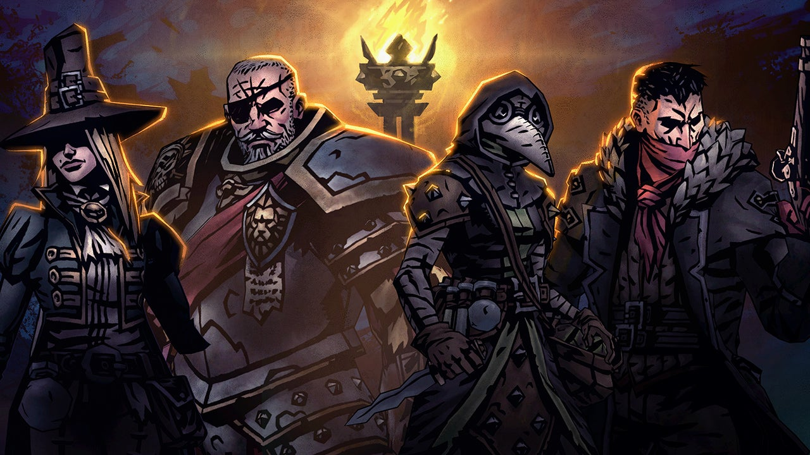

Darkest Dungeon is a roguelike role-playing video game developed and published
by Red Hook Studios. The game was first released for Microsoft Windows and OS X in January 2016,
which followed a year-long early access development period.
Later that year,
it was released for PlayStation 4, PlayStation Vita, and Linux,
with a port for iOS being released in 2017, and ports for Nintendo Switch and Xbox One being
released by 2018. Darkest Dungeon has the player manage a roster of heroes
to explore dungeons below a gothic mansion the player has inherited.
Played out in a mix of real-time movement and turn-based combat, a core feature of Darkest Dungeon
is the stress level of each hero that increases with further exploration and combat;
Darkest Dungeon is a roguelike role-playing video game developed and published by Red Hook Studios. The game was first released for Microsoft Windows and OS X in January 2016, which followed a year-long early access development period.
Later that year, it was released for PlayStation 4, PlayStation Vita, and Linux, with a port for iOS being released in 2017, and ports for Nintendo Switch and Xbox One being released by 2018. Darkest Dungeon has the player manage a roster of heroes
to explore dungeons below a gothic mansion the player has inherited. Played out in a mix of real-time movement and turn-based combat, a core feature of Darkest Dungeon is the stress level of each hero that increases with further exploration and combat;
Director Chris Bourassa and lead designer Tyler Sigman had become friends
while working at Backbone Entertainment, and had talked about the idea of building a game together,
but their commitments to other studios left them unable to do so.
During 2012 and early 2013,
they had brainstormed a number of ideas for potential games to develop. In April 2013,
they found they had the time to work on this project, and decided it was a "now or never" moment,
forming
British Columbia-based Red Hook Studios to develop the game.
By 2015, their team included six people in addition to three more supporting their sound,
music, and narration for the game.
Director Chris Bourassa and lead designer Tyler Sigman had become friends while working at Backbone Entertainment, and had talked about the idea of building a game together, but their commitments to other studios left them unable to do so.
During 2012 and early 2013, they had brainstormed a number of ideas for potential games to develop. In April 2013, they found they had the time to work on this project, and decided it was a "now or never" moment, forming
British Columbia-based Red Hook Studios to develop the game. By 2015, their team included six people in addition to three more supporting their sound, music, and narration for the game.
Endure True Horror Or perish
Face Your Failures
above shows a promo image of darkest dungeon featuring 3 character's, the leper, the plauge doctor and the highway man
the picture below shows a screenshot of gameplay. you may notice that white bar beneath their health bar. that is their stress bar.
darkest dungeon is also well known for its narrator simply named the ancestor. hes voiced by a man named wayne june
The image below is a promo for their upcoming sequel showing off 3d models of four characters from the first game